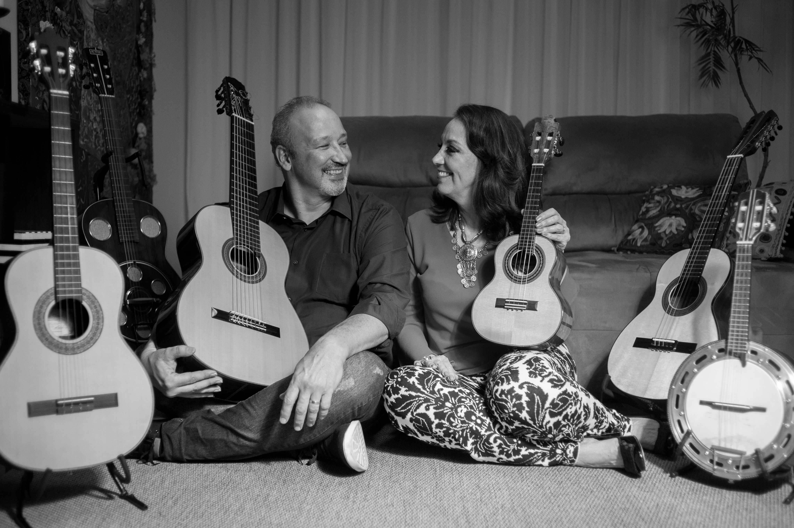

A Conversa de Cordas foi criada em 2015 por Tô Mendes (cavaquinho, banjo e violões de nylon e aço de 6 cordas) e Alexandre Wuensche (violões de nylon e aço - 6, 7 e 8 cordas, viola brasileira e violão tenor). Ambos vêm da escola do violão erudito, com histórias de recitais e apresentações com orquestras, e tiveram a maior parte da vivência na música popular ligada ao Choro.
Tô Mendes foi aluna de violão do Prof. Sérgio Belluco e estudou na Escola de Música Ernst Mahle, em Piracicaba. Tô Mendes foi premiada em diversos concursos de violão erudito no início dos anos 70. Em 2000 começou os estudos de cavaquinho, tocando no grupo piracicabano “Choro de Saia” desde sua criação até hoje.
Alexandre Wuensche estudou violão erudito com Sérgio Assad e Henrique Pinto e é especialista em "Violão: Pedagogia e Performance", pelas Faculdades Santa Marcelina (SP, 2024). Realizou concertos em São José dos Campos, São Paulo, Vale do Paraíba e Santa Barbara (Califórnia, EUA), tocou em duos e trios de violões e realizou recitais com orquestras no estado de São Paulo. Já acompanhou músicos como Altamiro Carrilho, Nelson Cavaquinho, Jorge Aragão e Ney Lopes.
A Conversa de Cordas explora um repertório que abarca a música erudita, o choro e a música regional, com os timbres dos instrumentos realçados pelos arranjos originais de Alexandre Wuensche.
Já participamos da produção dos Festivais de Choro "Pixinguinha no Vale" (2016, 2017 e 2018), dos projetos "Somos todas Chiquinha" e "Cronologia do Choro Joseense", patrocinados pelo Fundação Cultural Cassiano Ricardo, em S. José dos Campos. Realizamos recentemente os projetos "Pixinguinha de Bolso", "A Fina Linhagem do Samba", "Um passeio pelas Cordas Brasileiras", "As muitas conversas da Conversa de Cordas" e "O Clássico Violão Popular Brasileiro", com apresentações nas seguintes cidades brasileiras: S. José dos Campos (SP), São Paulo (SP), Piracicaba (SP), Taubaté (SP), Cunha (SP), Bertioga (SP), Presidente...